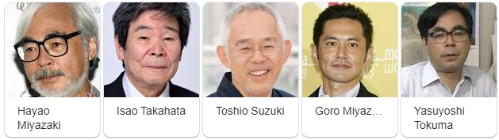

Studio Ghibli (スタジオジブリ Sutajio Jiburi?) es un estudio japonés de animación Fue fundado el 15 de junio de 1985 por los directores Hayao Miyazaki e Isao Takahata y el productor Toshio Suzuki. Seis de las películas de Studio Ghibli se encuentran entre las 10 películas de anime más taquilleras realizadas en Japón. Cuenta con cinco de sus películas fueron nominadas al Óscar a la producción cinematográfica de animación más destacada; las cintas nominadas fueron: El viaje de Chihiro (2001), El castillo ambulante (2004), El recuerdo de Marnie (2014), El viento se levanta (2013) y El cuento de la princesa Kaguya (2013). A pesar de estas numerosas nominaciones, tan solo El viaje de Chihiro fue galardonada con el Óscar.